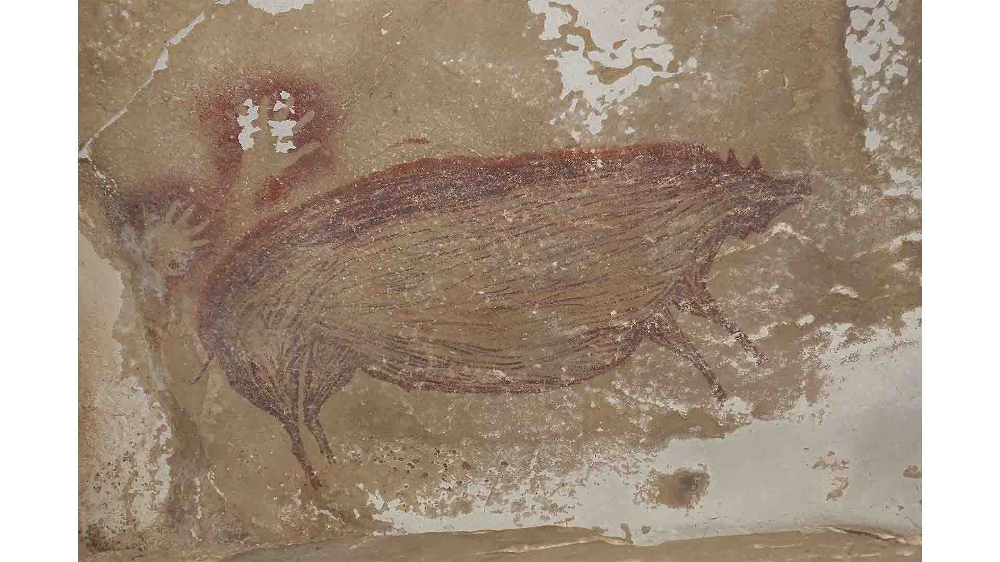
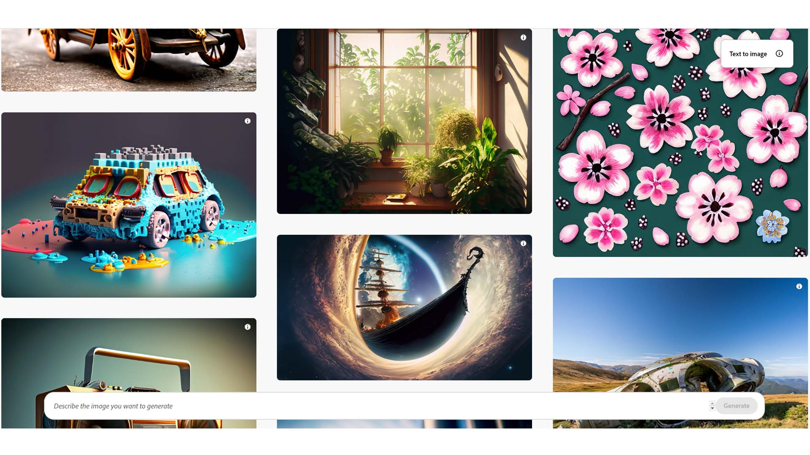
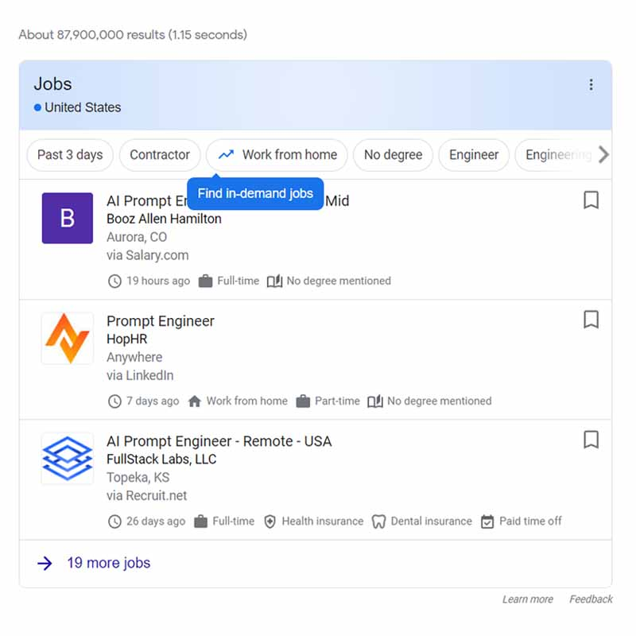

What is AI Art?
Artists and many other professionals are feeling the threat of AI taking over their livelihoods. AI’s threat to jobs and humanity as a whole jeopardizes life as we know it.

AI art is any form of digital art gor enhanced with AI tools. AI art can be seen in the form of artistry, imagery, photography, videos, and even audio compositions. Haven't you heard those fake Drake songs? Some are quite good.
It’s becoming increasingly hard to determine what is real anymore. With the rise of generative AI imagery, artistic creation (the old-fashioned way) might be in jeopardy.
While creative integrity is still very much alive, artists have to work twice as hard to overcome the wave of amateur AI art prompters... or do they?
For hundreds of thousands (or perhaps millions) of years, humans, or our closely-related ancestors, have been artists. I imagine the earliest form of art creations were ancient humans squashing berries to paint scribbly pictures of a wolf a few million years ago.
The Sulawesi pigs are the oldest known figurative, or representational, art (depicting objects from life). Researchers believe this 45,500-year-old Indonesian cave painting, apparently of a pig, is the oldest known depiction of the animal world. It’s among several recent findings that are shedding new light on the dawn of art (PNAS).
Humans have held the paint brush and the desire for creation for a while. And have been alone in doing so, until now.
Computer programs & AI now have the ability to create images, but they won't yet do it on their own. They, for now, require a human to input text phrases and context to generate the most accurate response.
Artificial Intelligence Jobs
One positive about AI Art is that it spawns an occupation that was previously absent: AI prompting i.e. inputting text to generate an image or AI text.
Anyone can get their hands on tools like Midjourney, Stable Diffusion, and Dale 2. But it takes a real master to do it for a living. With these, generating an image that’s good is really not that hard at all.
But, the distinction between good and great is becoming easier to see.
Companies are looking for experienced AI prompters and engineers. With the increased usage of AI in daily life, so comes an increase in demand for related jobs.
How much do AI prompt engineers make?
The role of an AI prompter is pivotal and can supplement a staggering number of microprocesses (and jobs). It is estimated that the average salary for an AI prompter will range from $100,000 - $150,000 for full-time, first-year employees (JobList).
Bloomberg claims roles are starting from salaries of $175,000 to $375,000, which seems like a bit of a stretch to me.
AI prompters can supplement customer support, content creation, PR, email outreach, & hundreds more tasks.
Other jobs feeling the immediate threat of AI taking their jobs are assembly line workers, musicians, EVEN PIZZA MAKERS.
What does an AI Prompt Engineer do?
These prompter jobs usually require a background working with computer science or programming, but not always. Associated responsibilities include prompting/talking to the generator systems to develop the most relevant and topic-specific results for each user. Most applicants will have hundreds of hours generating prompts with language models like Chat GPT & GPT 4.
Companies are looking for individuals with experience generating valuable & actionable responses & art generations.
Some prompts can get rather lengthy, for the more context you give, the better and more original the AI's response.
A professional prompter is necessary to help see through the challenges facing real-world applications for AI technology. It is thought that Generative AI, and its employees, have the power to robotize activities equivalent to 300 million full-time jobs globally according to a recent estimate by Goldman Sachs.
In addition, the chief executive of IBM expects AI to affect white-collar staffing, eliminating the need for up to 30 percent of certain roles while creating new ones. (Goldberg).
Is AI Art Really Art?
Technically yes. But, the question of whether AI-generated art can be considered "real art" is a current topic of debate in the art world. Depends on what you consider "real."
The birth of this kind of creative production has allowed new possibilities for artistic creation, breaking traditional boundaries and challenging any perceptions we had of what art is (Milliere).
Supporters of AI argue that AI-generated art should be considered a legit form of artistic expression. They focus on the creativity involved in designing and training the algorithms and AI's ability to explore unlimited amounts of data and generate unexpected, creative combinations (McFadden).
Those in favor emphasize that art, at its core, is about human expression, and AI can be seen as a tool or collaborator in the artistic process.
Critics, on the other hand, question the authenticity and intentionality of AI-generated art. They argue that true art requires conscious human intention and personal expression, qualities they believe are absent in AI-generated works (Streamlife).
Some argue that AI art lacks the emotional depth, cultural context, and critical engagement that human artists bring to their creations.
Ultimately, whether AI-generated art is considered "real art" is subjective. Art is personal. It requires cultural context. It involves emotion and interpretation.
That which is considered art encompasses an infinite range of possibility, by definition.
AI Art Regulations
The regulation of the usage of AI images for commercial use is a bit of a gray area. Many platforms currently allow users to have the right to publish their creations for any purpose (Hutchinson).
Paid Midjourney accounts can create and sell their works as original. Some people are even making AI Art NFT's and selling them for a few hundred bucks.
To determine if a tool can be used for personal or commercial use, users should perform their own research and read through each image generator terms and policies before use.
In effect as of June 2023, there is an opportunity to sell generated visual images, but many of the user databases and generator tools are re-assessing whether money transactions will be permitted.
Is AI Art a copyright violation?
Per the Congressional Research Service, "AI programs might also infringe copyright by generating outputs that resemble existing works. Under U.S. case law, copyright owners may be able to show that such outputs infringe their copyrights if the AI program both (1) had access to their works and (2) created “substantially similar” outputs."
AI-generated images are produced through a database. The materials within the database source are reliant on pre-existing artworks from man-made pieces, often including photos of actual human individuals and other everyday items.
In order to analyze and create visuals, there are bits and pieces of existing works that the AI is trained with.
Each of the billions of pieces the database is trained with are mix-matched together to ultimately create outcomes based on the request of the user.
AI art pieces are predetermined by some to be copyrighted since they include all pre-existing works within them, regardless of how evident the previous piece may appear (Heyler). As of now, it is not technically a legal barrier, but very well might be a legal barrier in the near future.
In February of 2023, the US Copyright Office effectively implied that AI-generated images cannot be copyrighted at all as an element of ‘human authorship’ (Lang).
For the avoidance of any copyright allegations, for marketing and commercial use, it is suggested individuals create their own foundation and database of art (Vincent).
This is a faulty solution since it would likely take years and millions of image sources to develop and train the database. In order to create a brand new AI generator and build an individualized database, you would need to start from scratch.
All images, drawings, and generated visuals would need to be completely their own (Harvard). Ultimately, this defeats the purpose; it is assumed that those using AI generators are those lacking the artistic skill range to produce art or lack the technical knowledge and resources to develop their own art generator (Yale).
Dall-E guidelines specifically state ‘Do not upload images to which you do not hold appropriate usage rights, or foundational creativity to all aspects of image for personal use’ (ArtLaw).
Especially in the usage of human representation, the AI pulls from pre-generated and pre-altered pictures that are broken down from real human faces from real-life images at its core; meaning anytime an AI-generated art piece includes a human person or animal, it is portraying the visual life of one or multiple current or past living beings (Heikkila).

Do I own the AI Art that I create?
No. AI Art cannot, as of July 2023, be protected by copyright. The database used to generate the image you prompted is created with millions if not billions of images that you do not own.
That's about it for now. The legal landscape and conversation is always changing. Be sure to do your own research and make sure you're up to date with the latest!